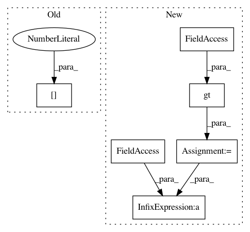

9f2a83c4ce192da805e18617ce2421bb80cfe8fe,snntoolbox/core/inisim.py,SpikeDense,get_output,#SpikeDense#Any#,195
Before Change
inp, time, updates = get_input(self)
// Get impulse
self.impulse = T.add(T.dot(inp, self.get_weights()[0]),
self.get_weights()[1])
output_spikes = update_neurons(self, self.impulse, time, updates)
self.updates = updates
return T.cast(output_spikes, "float32")
After Change
// Also, write the weights to ANN so the activations are
// computed based on the same parameters.
// Modify parameters if firing rate of layer too low
self.fac = theano.ifelse.ifelse(
T.eq(time / settings["dt"] % 10, 0) *
T.gt(self.max_spikerate, 0.1) *
T.gt(1 / settings["dt"] - self.max_spikerate, epsilon),
1 / self.max_spikerate, 1.0)
updates.append((self.W, self.W * self.fac))
updates.append((self.b, self.b * self.fac))
// Get impulse
self.impulse = T.add(T.dot(inp, self.W), self.b)
In pattern: SUPERPATTERN
Frequency: 3
Non-data size: 6
Instances
Project Name: NeuromorphicProcessorProject/snn_toolbox
Commit Name: 9f2a83c4ce192da805e18617ce2421bb80cfe8fe
Time: 2016-06-29
Author: bodo.rueckauer@gmail.com
File Name: snntoolbox/core/inisim.py
Class Name: SpikeDense
Method Name: get_output
Project Name: HyperGAN/HyperGAN
Commit Name: 153e67cedf653ec097db65170a88dd256652d6dc
Time: 2020-08-01
Author: martyn@255bits.com
File Name: examples/colorizer.py
Class Name: WalkSampler
Method Name: _sample
Project Name: NeuromorphicProcessorProject/snn_toolbox
Commit Name: 9f2a83c4ce192da805e18617ce2421bb80cfe8fe
Time: 2016-06-29
Author: bodo.rueckauer@gmail.com
File Name: snntoolbox/core/inisim.py
Class Name: SpikeConv2DReLU
Method Name: get_output